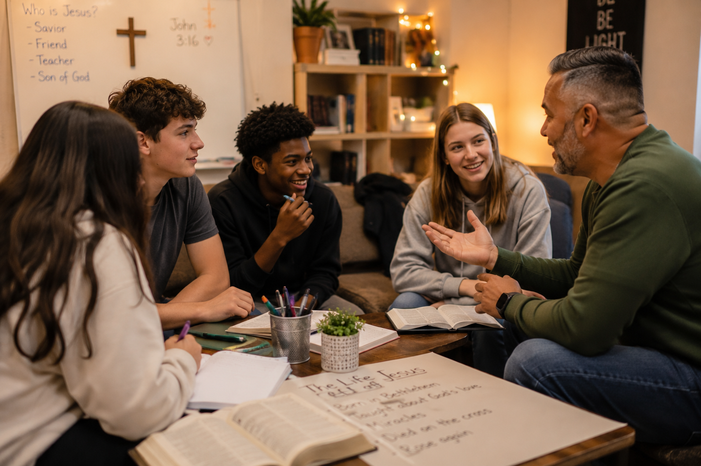

We're a community of students, adults, and clergy who believe every high school student deserves a weekend that reminds them they are deeply loved.
What is now known as The Journey began on February 21, 1986, when Knox-Warren Chrysalis #1 welcomed 14 candidates at Monmouth College. In October 1991, the retreat moved to Costa Catholic School in Galesburg, and beginning with Weekend #67 in the fall of 2003, it was renamed The Weekend — A Journey with Christ. By 2012, over 100 Christ encounter weekends had been held, bringing together more than 2,100 people — including 1,600 candidates from more than 100 churches — with over 95 clergy serving on teams.
Over the years, hundreds of students have walked through a Journey weekend and walked out changed — not because of any program or formula, but because of authentic community and the steady presence of God's love.
Today, we host four retreat weekends every year — two in spring, two in fall — welcoming students from Galesburg and surrounding communities who are curious about faith, community, and what it means to be known.
More About Our Retreats
The purpose of The Journey retreat is to guide participants, by the power of the Holy Spirit, into a personal relationship with Jesus Christ, or if they already have a relationship with Christ, to help them deepen that relationship with Him. We seek to create opportunities for the Holy Spirit to develop Godly Character in each participant through weekend retreats, leadership opportunities, and other endorsed activities each year.
Our retreat format is built around talks delivered by youth, adults, and clergy who speak honestly about faith, doubt, belonging, and grace. Combined with group activities, free time, and small group conversations, the weekend creates space for something real to happen.
We welcome all high school students ages 14–19, regardless of their background or faith experience. You don't need to have it figured out. You just need to show up.
Jesus Christ, our resurrected Savior, should be the foundation and center of every individual's life.
We value all people, created in God's image to live in love and holiness.
One true God, existing in three persons: Father, Son, and the Holy Spirit, full of love and glory.
We look to God's word for moral guidance and abstaining from certain practices which have negative effects on human physical and moral well being.
We need community that supports Christian values and spiritual development.
All Weekend community members, candidates, and everyone else are worthy of love and should be treated with respect.
Applications are open for our upcoming retreat weekends. We'd love to have you with us.